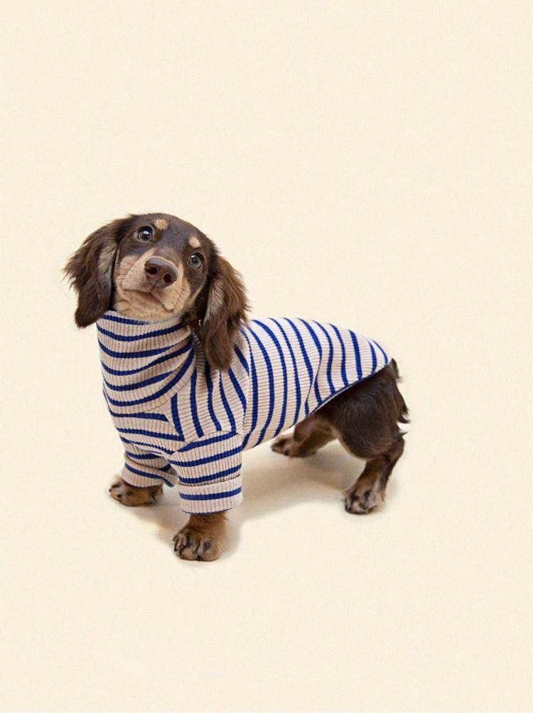

Ľahký letný kúsok ušitý tak, aby s každým nosením mäkol a krásnel.
Krajčírstvo · tvorba s citom
Ahoj, som
Meno Priezvisko.
Dávam látkam nový príbeh. Tvorím odevy a jedinečné kúsky, v ktorých sa poctivé remeslo stretáva s každodenným životom.
Pozrieť projektyKúsok po kúsku. S dôrazom na detail.
Z ateliéru
Ručne. S citom. Navždy.
Vybrané práce · 2023—2025
Projekty.
Každý kúsok začína nápadom.
A pokračuje dobrým materiálom.
Obľúbené sako, ktoré dostalo nový strih, lepšiu podšívku a ďalšie roky života.
Hodvábna blúzka navrhnutá a ušitá na mieru pre chvíle, ktoré zostávajú.
Ukážkové projekty — názvy aj popisy si môžeš upraviť podľa svojej tvorby.

O mne
Menej, ale
po svojom.
Verím, že odev môže byť viac než len pekná vec. Môže sedieť presne tak, ako má, pripomínať dobrý príbeh a vydržať dlhšie než jednu sezónu.
V mojom ateliéri spájam precíznu ručnú prácu s láskou k materiálom, ktoré si zaslúžia druhú šancu. Každý steh má svoj dôvod. Každý kúsok svoj charakter.
Porozprávajme sa o vašom nápadeMáte nápad? Poďme ho ušiť.
Začína sa to jedným rozhovorom.
Ozvite sa mi